<div class="footer-container">
    <div class="footer-wrapper">
        <div class="info-wrapper">
            <div class="logo">
                
            </div>
            <div class="info">
                <p class="text">S & S Veteran Services, LLC offers personalized care to address drug addiction and
                    mental illness
                    disorders among veterans in northern Virginia. We aim to help veterans recover, reintegrate into
                    society successfully, and improve their mental health and well-being. We provide virtual
                    evidence-based treatments and support services.</p>
            </div>
            <div class="contact-wrapper">
                <p>Company Name: S&S Veteran Services</p>
                <p>Company Address: 6009 Fox Haven Court, Woodbridge, VA 22193</p>
                <p>Company Phone Number: <a href="tel:855-725-6789">855-725-6789</a></p>
                <p>Email: <a href="mailto:info@ssveterancare.com">info@ssveterancare.com</a></p>
            </div>
            <div class="copyright">
                <p>© 2023, All Rights Reserved</p>
            </div>
        </div>
    </div>
</div>